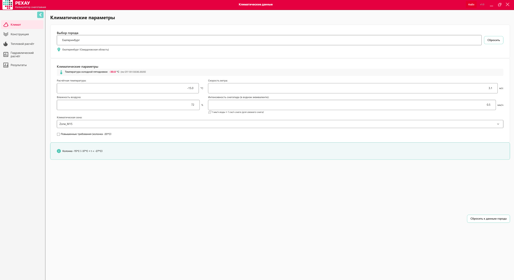
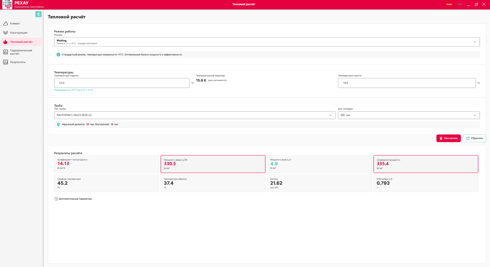
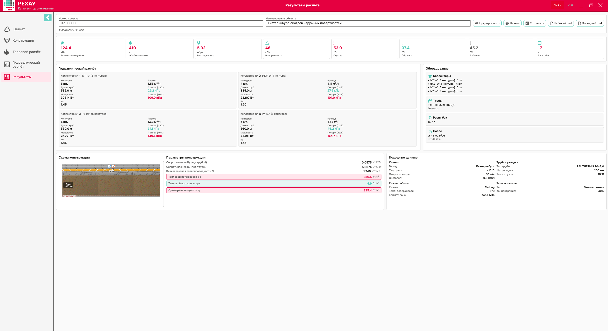

Объект: Екатеринбург, Свердловская область, обогрев наружных поверхностей Номер проекта: 9-100000 Дата расчёта: 28.07.2026 Цель: снеготаяние поверхности
| Параметр | Значение |
|---|---|
| Город, регион | Екатеринбург, Свердловская область |
| Климатическая зона | zone_M15 |
| Расчётная температура воздуха | −15 °C |
| Скорость ветра | 3,1 м/с |
| Относительная влажность | 72 % |
| Интенсивность снегопада | 0,5 мм/ч |
| Повышенные требования | нет |
| Уровень грунтовых вод | 2 м |
| Нагрузки на покрытие | да (hasLoads = true) |
| Труба | RAUTHERM S 20×2,0 |
| Шаг укладки | 200 мм |
| Теплоноситель | этиленгликоль 40 % |
| Температура подачи / обратки | 53,0 / 37,36 °C |
| Средняя температура / ΔT | 45,18 °C / 15,64 К |
| q_up / q_down / q_total | 330,49 / 4,88 / 335,36 Вт/м² |
| Подводка к коллектору | 10 м на контур |
| Шаг подводки | 5 см |
| Полезное тепло подводки | 10 % |
Тест/Екат.smc содержит 4 сохранённых коллектора с 19 рассчитанными контурами.| Параметр | Значение | Источник |
|---|---|---|
| Город | Екатеринбург | data/climate_db.json |
| Температура воздуха | −15 °C | zone_M15 |
| Скорость ветра | 3,1 м/с | wind_avg_t_le_8 |
| Влажность | 72 % | humidity_15h_cold |
| Интенсивность снегопада | 0,5 мм/ч | задана вручную |
| Климатическая зона | zone_M15 | автоматический выбор |
Слои над трубой:
| № | Материал | Толщина, мм | λ, Вт/(м·К) |
|---|---|---|---|
| 1 | Бетон | 100 | 1,74 |
Слои под трубой:
| № | Материал | Толщина, мм | λ, Вт/(м·К) |
|---|---|---|---|
| 1 | Бетон | 10 | 1,74 |
| 2 | Бетон с арматурной сеткой | 10 | 1,69 |
| 3 | Пенополистирол (ЭППС) | 80 | 0,035 |
| 4 | Песчано-гравийная смесь (ПГС) | 200 | 1,00 |
| 5 | Грунт | 1000 | 0,50 |
| 6 | Грунт | 570 | 0,50 |
| Результат конструкции | Значение |
|---|---|
| R1 (сопротивление над трубой) | 0,057 м²·К/Вт |
| R2 (сопротивление под трубой) | 5,637 м²·К/Вт |
| λE | 1,74 Вт/(м·К) |
| УГВ | 2 м (сухие условия) |
| Нагрузки | да |
| Параметр | Значение |
|---|---|
| Режим работы | Таяние |
| Температура грунта | 10 °C |
| Температура подачи | 53,0 °C |
| Температура обратки | 37,36 °C |
| Средняя температура | 45,18 °C |
| ΔT | 15,64 К |
| q_up | 330,49 Вт/м² |
| q_down | 4,88 Вт/м² |
| q_total | 335,36 Вт/м² |
| Тип трубы | RAUTHERM S 20×2,0 |
| Шаг укладки | 200 мм |
| Теплоноситель | этиленгликоль 40 % |
| Длина подводки | 10 м на контур |
| Шаг подводки | 5 см |
| Полезное тепло подводки | 10 % |
.smc, экспортировать отчёт.Поле поиска города, поля температуры, скорости ветра, влажности, интенсивности снегопада, флаг «Повышенные требования» и кнопка «Сбросить к данным города».

После выбора города программа подставляет:
Интенсивность снегопада 0,5 мм/ч задаётся вручную.
| Параметр | Допустимый диапазон |
|---|---|
| Температура воздуха | от −50 до +10 °C |
| Скорость ветра | от 0,1 до 30 м/с |
| Влажность | от 20 до 100 % |
| Интенсивность снегопада | от 0 до 20 мм/ч |
Конструктор слоёв: две колонки «Над трубой» и «Под трубой», список материалов, поля толщины и λ, поле «Уровень грунтовых вод».
| Параметр | Значение |
|---|---|
| R1 | 0,057 м²·К/Вт |
| R2 | 5,637 м²·К/Вт |
| λE | 1,74 Вт/(м·К) |
Выпадающие списки «Режим работы» и «Тип трубы», поля температуры подачи, температуры грунта, шага укладки и кнопка «Рассчитать».

| Параметр | Значение |
|---|---|
| Температура подачи | 53,0 °C |
| Температура обратки | 37,36 °C |
| Средняя температура | 45,18 °C |
| ΔT | 15,64 К |
| q_up | 330,49 Вт/м² |
| q_down | 4,88 Вт/м² |
| q_total | 335,36 Вт/м² |
Таблица контуров, свойства теплоносителя, параметры коллектора, переключатель «Рабочая температура / Расчётная температура» и кнопка «Рассчитать».

Примечание о длине. Длина контура в
.smc(circuitLength) не включает 10 м подводки. Полеsummary.totalPipeLengthвключает подводки для рассчитанных контуров. Поэтому сумма длин петель по таблицам меньше сводного значения ровно на суммарную длину подводок.
Тип коллектора принят по верхнему полю
collectorTypeв.smc, а не по вложенномуsummary.collectorType. Для коллекторов № 1, № 3 и № 4 верхнее поле содержит IV 1¼″, а вложенноеsummary.collectorType— HKV-D. В инструкции используется верхнее поле и соответствующее значение Kv.
| Коллектор | Тип | Kv | Контуров | Длина, м | Мощность, кВт | Расход, м³/ч | ΣΔP раб, кПа | ΣΔP хол, кПа |
|---|---|---|---|---|---|---|---|---|
| 1 | IV 1¼″ | 1,45 | 5 | 535 | 32,614 | 1,553 | 29,199 | 109,002 |
| 2 | HKV-D | 1,20 | 4 | 385 | 23,207 | 1,105 | 27,856 | 101,030 |
| 3 | IV 1¼″ | 1,45 | 5 | 560 | 34,291 | 1,633 | 37,099 | 130,840 |
| 4 | IV 1¼″ | 1,45 | 5 | 560 | 34,291 | 1,633 | 46,226 | 154,667 |
| Итого | 19 | 2040 | 124,403 | 5,924 |
Единицы: петля и подводка — м; Q — кВт; G — л/ч; v — м/с; ΔP — кПа.
| Контур | Петля | Подв. | Q | G | v | ΔP раб. | ΔP хол. | Обороты |
|---|---|---|---|---|---|---|---|---|
| 1 | 100 | 10 | 6,724 | 320,183 | 0,442 | 29,199 | 109,002 | 8,00 |
| 2 | 95 | 10 | 6,389 | 304,213 | 0,420 | 25,686 | 98,829 | 5,50 |
| 3 | 90 | 10 | 6,053 | 288,244 | 0,398 | 22,452 | 89,154 | 4,50 |
| 4 | 100 | 10 | 6,724 | 320,183 | 0,442 | 29,199 | 109,002 | 8,00 |
| 5 | 100 | 10 | 6,724 | 320,183 | 0,442 | 29,199 | 109,002 | 8,00 |
| Контур | Петля | Подв. | Q | G | v | ΔP раб. | ΔP хол. | Обороты |
|---|---|---|---|---|---|---|---|---|
| 1 | 80 | 10 | 5,383 | 256,306 | 0,354 | 18,317 | 72,856 | 0,75 |
| 2 | 80 | 10 | 5,383 | 256,306 | 0,354 | 18,317 | 72,856 | 0,75 |
| 3 | 90 | 10 | 6,053 | 288,244 | 0,398 | 24,400 | 91,129 | 1,25 |
| 4 | 95 | 10 | 6,389 | 304,213 | 0,420 | 27,856 | 101,030 | 2,50 |
| Контур | Петля | Подв. | Q | G | v | ΔP раб. | ΔP хол. | Обороты |
|---|---|---|---|---|---|---|---|---|
| 1 | 100 | 10 | 6,724 | 320,183 | 0,442 | 29,199 | 109,002 | 4,50 |
| 2 | 110 | 10 | 7,395 | 352,121 | 0,486 | 37,099 | 130,840 | 8,00 |
| 3 | 100 | 10 | 6,724 | 320,183 | 0,442 | 29,199 | 109,002 | 4,50 |
| 4 | 100 | 10 | 6,724 | 320,183 | 0,442 | 29,199 | 109,002 | 4,50 |
| 5 | 100 | 10 | 6,724 | 320,183 | 0,442 | 29,199 | 109,002 | 4,50 |
| Контур | Петля | Подв. | Q | G | v | ΔP раб. | ΔP хол. | Обороты |
|---|---|---|---|---|---|---|---|---|
| 1 | 90 | 10 | 6,053 | 288,244 | 0,398 | 22,452 | 89,154 | 2,75 |
| 2 | 100 | 10 | 6,724 | 320,183 | 0,442 | 29,199 | 109,002 | 3,50 |
| 3 | 100 | 10 | 6,724 | 320,183 | 0,442 | 29,199 | 109,002 | 3,50 |
| 4 | 120 | 10 | 8,066 | 384,059 | 0,531 | 46,226 | 154,667 | 8,00 |
| 5 | 100 | 10 | 6,724 | 320,183 | 0,442 | 29,199 | 109,002 | 3,50 |
Финальная сводка, схема конструкции, таблица контуров, параметры теплоносителя и кнопка экспорта PDF.

.smc| Параметр | Значение |
|---|---|
| Общее число рассчитанных контуров | 19 |
| Общая длина петель (без подводок) | 1850 м |
| Общая длина подводок | 190 м |
| Общая длина трубы (с подводками) | 2040 м |
| Суммарная мощность | 124,403 кВт |
| Суммарный расход | 5,924 м³/ч |
| Максимальные рабочие потери | 46,226 кПа (контур 4 коллектора 4) |
| Максимальные холодные потери | 154,667 кПа (контур 4 коллектора 4) |
Объём системы и расширительный бак не представлены непосредственно в
.smcи не входят в числовой источник данной инструкции. Эти параметры при необходимости определяются отдельным проектным расчётом.
| Проверка | Лимит | Факт | Статус |
|---|---|---|---|
| Минимальная скорость | ≥ 0,1 м/с | 0,354 м/с | пройдено |
| Максимальная скорость | ≤ 2,0 м/с | 0,531 м/с | пройдено |
| Удельные потери на метр | ≤ 300 Па/м | 280 Па/м | пройдено |
| Рабочие потери по определяющему контуру | проверить по паспорту коллектора | 46,226 кПа | требует проверки |
| Холодные потери | проверить по насосу | 154,667 кПа | требует насоса с запасом напора |
| Температура подачи | ≤ 50 °C для бетона | 53 °C | программа покажет предупреждение |
| Сумма длины по коллекторам | 2040 м | 535 + 385 + 560 + 560 = 2040 м | совпадает |
| Сумма мощности | 124,403 кВт | 32,614 + 23,207 + 34,291 + 34,291 = 124,403 кВт | совпадает |
| Сумма расхода | 5,924 м³/ч | 1,553 + 1,105 + 1,633 + 1,633 = 5,924 м³/ч | совпадает |
| Проблема | Причина | Решение |
|---|---|---|
| Рабочие потери требуют проверки | Контур 4 коллектора 4: петля 120 м и максимальные потери | Сверить допустимые потери и насос с паспортами оборудования; при необходимости скорректировать контур |
| Холодные потери > 100 кПа | Высокая вязкость при −15 °C | Предусмотреть насос с запасом по напору и частотным регулированием |
| Предупреждение по температуре подачи | 53 °C выше max_supply_temp бетона (50 °C) | Согласовать в проекте или снизить подачу до 50 °C с уточнением расхода |
.smc..smc.Тест/Екат.smc — главный числовой источник проекта.data/climate_db.json — климатические параметры Екатеринбурга.data/materials_db.json — материалы пирога покрытия.data/rehau_products.json — трубы и коллекторы RAUTHERM S / HKV-D.data/glycol_data.json — свойства теплоносителя.docs/инструкция/README v.2.1.md — структурный образец документа.Презентация/*.PNG — скриншоты интерфейса для иллюстрации.Версия инструкции: 2.2 · Расчёт выполнен в калькуляторе снеготаяния